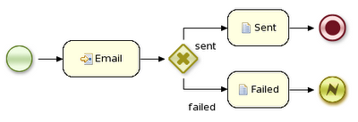

JUnit testing your jBPM5 processes
- helper methods to create a new knowledge base and session for a given (set of) process(es)
- you can select whether you want to use persistence or not
- assert statements to check
- the state of a process instance (active, completed, aborted)
- which node instances are currently active
- which nodes have been triggered (to check the path that has been followed)
- get the value of variables
- etc.
public class MyProcessTest extends JbpmJUnitTestCase {
public void testProcess() {
// create your session and load the given process(es)
StatefulKnowledgeSession ksession = createKnowledgeSession("sample.bpmn");
// start the process
ProcessInstance processInstance = ksession.startProcess("com.sample.bpmn.hello");
// check whether the process instance has completed successfully
assertProcessInstanceCompleted(processInstance.getId(), ksession);
// check whether the given nodes were executed during the process execution
assertNodeTriggered(processInstance.getId(), "StartProcess", "Hello", "EndProcess");
}
}
The following example describes how a process that sends out an email could be tested. This test case in particular will test whether an exception is raised when the email could not be sent (which is simulated by notifying the engine that the sending the email could not be completed). The test case uses a test handler that simply registers when an email was requested (and allows you to test the data related to the email like from, to, etc.). Once the engine has been notified the email could not be sent (using abortWorkItem(..)), the unit test verifies that the process handles this case successfully by logging this and generating an error, which aborts the process instance in this case.

public void testProcess2() {
// create your session and load the given process(es)
StatefulKnowledgeSession ksession = createKnowledgeSession("sample2.bpmn");
// register a test handler for "Email"
TestWorkItemHandler testHandler = new TestWorkItemHandler();
ksession.getWorkItemManager().registerWorkItemHandler("Email", testHandler);
// start the process
ProcessInstance processInstance = ksession.startProcess("com.sample.bpmn.hello2");
assertProcessInstanceActive(processInstance.getId(), ksession);
assertNodeTriggered(processInstance.getId(), "StartProcess", "Email");
// check whether the email has been requested
WorkItem workItem = testHandler.getWorkItem();
assertNotNull(workItem);
assertEquals("Email", workItem.getName());
assertEquals("me@mail.com", workItem.getParameter("From"));
assertEquals("you@mail.com", workItem.getParameter("To"));
// notify the engine the email has been sent
ksession.getWorkItemManager().abortWorkItem(workItem.getId());
assertProcessInstanceAborted(processInstance.getId(), ksession);
assertNodeTriggered(processInstance.getId(), "Gateway", "Failed", "Error");
}
We will extend the set of out-of-the-box assert statements over time, but if you do need additional assertions for your use cases, you can already extend the set yourself by looking at the implemention of the existing ones and simply tweaking where necessary. And let us know if you create some reusable ones, we’ll add them to the code base!
If you combine these test features with the advanced debugging capabilities, (as for example shown in this screencast) you can use this to walk through the process one step at a time and figure out what’s happening internally. We’re working on extending this even further to support full simulation and testing capabilities. This would allow you easily define and run various test scenarios, replay an execution log, etc. The foundation is already there (like a simulation clock and the definition of execution paths), but we’re still working on the user interface that would make this useable by not just developers but also business users.

{kind=link}
{kind=link}